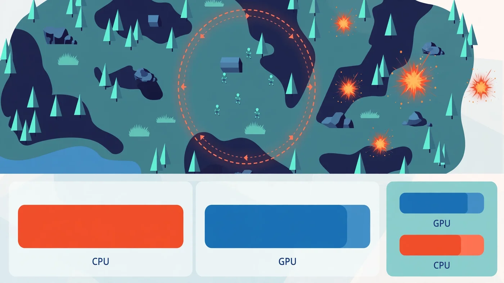

Apex Legends Bottleneck: Is Your CPU or GPU Limiting Your FPS?
An Apex Legends bottleneck is the reason your frame rate collapses in a final-ring fight while the lobby ran smoothly. The game does not have one fixed answer to the CPU-or-GPU question: at 60 to 100 FPS it is usually the graphics card that sets the pace, while at 144 Hz and above — especially on a 240 Hz monitor — single-core CPU speed often becomes the ceiling, even when the graphics card still has headroom. This guide explains how Apex's engine creates that split, how to diagnose your own system in a real match, and which settings and upgrades actually fix it.

Apex Legends Bottleneck: The Short Answer
Apex Legends is a balanced game that flips between its two limits depending on your frame rate target, your resolution, your settings, and what is happening in the match. At 60 to 100 FPS on high settings, it is usually GPU-bound: the card does the heavy rendering work and the CPU has time to prepare each frame. At 144 Hz and above, especially at 240 Hz, single-core CPU speed often becomes the ceiling, even when the graphics card still has headroom — each frame has to be ready in a few milliseconds, and any CPU delay shows up as a dip in your 1% lows.
That split is the key to this guide. If you only look at average FPS in a quiet lobby or an empty drop, you can miss the real problem: Apex punishes drops in the moments that matter most — hot drops, third-party fights, ability exchanges, and crowded final circles. A PC that averages 180 FPS but falls to 90 FPS in a final circle feels worse in ranked play than a PC that holds a steady 144 FPS through the whole match.
Is Apex Legends CPU or GPU Bound?
It depends on your settings and your refresh rate target. The table is the shortcut — confirm it with the five-minute test later in this guide.
| FPS target and setup | Main limit | Why this limit appears |
|---|---|---|
| 60 to 100 FPS at 1080p, high settings | GPU | The graphics card does most of the rendering work, and the CPU has time to prepare each frame |
| 144 FPS at 1080p, competitive settings | CPU | The GPU finishes frames quickly, so single-core CPU speed and memory speed set the pace |
| 240 FPS at 1080p, competitive settings | CPU, strongly | Each frame must be ready in about 4.2 milliseconds, so any CPU delay shows up as a dip in 1% lows |
| 144 FPS at 1440p, high to ultra settings | GPU | More pixels and heavier effects put the load back on the graphics card |
| 144 FPS at 1440p, competitive settings | Balanced | A fast CPU is still needed for high refresh, but a mid-range GPU can become the limit in open areas |
Two things catch players out. First, Apex defaults to a 144 FPS cap, whatever your monitor is — if you never removed it, you have never seen what your hardware can do. Second, players report that the game tops out near 300 FPS even with the cap removed, so on a 360 Hz panel the useful measure is how close your 1% lows stay to your target. Our CPU vs GPU bottleneck guide explains the distinction, and our resolution bottleneck guide shows how the balance shifts across resolutions.
How the Source Engine Creates the Apex Legends Bottleneck
Apex Legends runs on a heavily modified version of the Source engine, inherited through Titanfall 2. That heritage shapes its performance: the engine loads entities, ability effects and player models onto the CPU thread aggressively, so your graphics card can sit idle while your processor works through draw calls during a crowded final ring. You are fighting the engine's architecture, not just your hardware's limits.
The load is uneven by design. A quiet drop or the Firing Range barely touches the CPU, while the spikes come late: many squads in one ring, Bangalore smoke, Gibraltar's bombardment, and a pile of death boxes on screen at once. Each ability effect spawns a particle system the engine processes on the main thread, and each death box, loot item and ragdoll adds to what the processor must track every frame. Meanwhile the GPU handles volumetric lighting, large open areas and long sightlines, so the bottleneck shifts from scene to scene.
Apex now runs on DirectX 12 only: Respawn made it the default in early 2025 and removed the DirectX 11 option in a later patch, so DirectX 11 advice no longer applies. DirectX 12 spreads the work of building draw commands across more threads, and Respawn reported that most players saw better CPU performance in full matches after the switch. The trade-off is shader compilation: the game compiles shaders for your card, and the first compile after a patch can take a while and hitch — let it finish before you judge performance; see our shader compilation stutter guide and our DirectX 11 vs 12 vs Vulkan guide.
When Apex Legends Becomes CPU Bound
Apex becomes CPU-bound when the processor cannot prepare frames fast enough, and that happens in a few specific situations. The most common is the high refresh target: at 1080p on competitive low settings with a mid-range or better graphics card, the GPU finishes each frame quickly, so single-core CPU speed and memory speed set the pace. At 240 Hz every frame must be ready in about 4.2 milliseconds, so any delay shows up in the 1% lows.
The second situation is the late-game pile-up. In a final circle with several squads fighting at once, the engine tracks up to 20 visible players, their ability effects, bullet tracers, impact decals and ragdoll physics simultaneously on the CPU main thread. Bangalore's smoke, Caustic's traps and Gibraltar's bombardment each add particle systems the processor must handle per frame, and a dozen active ragdolls eat CPU cycles meant for movement prediction. None of this is graphics work, so a stronger card does not help.
The third situation is memory. The Source engine leans heavily on RAM for texture streaming, and slow or single-channel memory shows up directly in Apex's 1% lows. If your RAM runs at its slow default speed because XMP or EXPO was never enabled, or you have a single stick in single-channel mode, the CPU starves for bandwidth exactly when fights get busy. Our RAM speed guide and single vs dual channel RAM guide explain how to check, and our XMP and EXPO guide walks through turning the rated speed on.
When Apex Legends Becomes GPU Bound
Apex becomes GPU-bound when the graphics card cannot draw frames fast enough, and that is the normal situation at higher resolutions and settings. At 1440p on high or ultra settings, and at 4K, the extra pixels and heavier effects put the load squarely on the card. Volumetric lighting, dynamic spot shadows and ambient occlusion are the biggest GPU costs, and they buy almost nothing competitively.
VRAM is the quieter GPU limit. Apex streams textures as you move across its large maps, and a card short on VRAM stalls when textures have to stream in late — visible as pop-in during fights. The Texture Streaming Budget setting controls this directly: set it one tier below your card's actual VRAM, and the streaming stalls mostly go away. Our VRAM guide explains what each resolution actually needs.
One thing to know before you look for upscaling: Apex supports AMD FidelityFX Super Resolution 1.0 only, and it has no DLSS or frame generation. The only frame-rate strategy is reducing CPU and GPU load to raise native FPS; the Adaptive Resolution FPS Target setting lowers render resolution automatically to hold a frame rate you choose, but it does nothing for a CPU limit. Our DLSS and frame generation guide explains when upscaling helps and when it hides the real problem.
Why Your FPS Drops in Fights but Not in the Lobby
This is the most common Apex performance complaint, and it has a simple cause: the lobby and a fight are not the same workload. The lobby renders one small scene with minimal entities, so either part of your PC can keep up. A fight makes the engine process up to 20 visible players, their ability effects, bullet tracers, impact decals and ragdoll physics simultaneously on the CPU main thread. That is entity-driven load, not graphics-driven load, and it is why lowering your resolution often does not fix it.
Watch the frame time graph, not just the average FPS. If the average looks fine but the 1% lows fall far below it during fights, the problem is frame pacing — our frame time guide explains why a high average FPS can still feel choppy, and our stuttering and 1% lows guide explains how to read those numbers. The practical fix starts with the CPU-heavy settings — Effects Detail, Ragdolls and Impact Marks on Low.
The Five-Minute Test: Find Your Apex Legends Bottleneck
Before you change a setting or buy anything, run this test. It costs nothing and it is the difference between a useful fix and an expensive guess.
- Remove the frame rate cap. Apex defaults to a 144 FPS cap — add
+fps_max unlimitedto the game's launch options in the EA App or Steam, or the cap hides which part is the real limit. - Turn off V-Sync and Adaptive Resolution. A cap or a dynamic resolution makes utilization numbers meaningless. Turn off V-Sync and set Adaptive Resolution FPS Target to 0 first.
- Open a usage overlay. Show GPU usage, per-core CPU usage, VRAM usage, frame rate and frame time while you play.
- Play a real match. Hot drop, rotate through a busy area, and fight in a final circle. The Firing Range does not count: it barely loads the CPU.
- Read the numbers. GPU near 95 to 100% with frame rates below target means the card is the limit. GPU well below full load with a CPU thread pinned near maximum means the processor is the limit. If neither part is maxed out, the limit is elsewhere — RAM, VRAM, storage, thermals, or the network — and our how to check a PC bottleneck guide walks through each case.
One more check before you blame your hardware: network lag is not a bottleneck. Packet loss shows up as no-reg hitmarkers and rubber-banding that no hardware upgrade fixes, so if your FPS is steady but the game still feels wrong, check ping and packet loss first — our lag vs low FPS guide explains how to tell the two apart. Repeat the test in a second match: one quiet game can mislead you. Like Fortnite and Warzone, Apex is a battle royale where the CPU-first pattern shows up at competitive settings — our Fortnite bottleneck guide and our Warzone bottleneck guide cover how the same pattern plays out there.
Settings That Move the Load Between CPU and GPU
Not every setting costs the same part. The table shows which settings load the CPU, which load the GPU, and what competitive players choose — so you can move the load off whichever part is limiting you.
| Setting | Mainly loads | Competitive choice | Why |
|---|---|---|---|
| Effects Detail | CPU | Low | Ability particles run on the main thread |
| Ragdolls | CPU | Low | Each ragdoll eats CPU cycles for movement prediction |
| Impact Marks | CPU | Low | Decals add tracking work, no competitive value |
| Model Detail | CPU and GPU | Low | Lower detail cuts both draw calls and rendering work |
| Volumetric Lighting | GPU | Disabled | Expensive lighting pass, almost no competitive benefit |
| Dynamic Spot Shadows | GPU | Disabled | Heavy shadow pass; static shadows give the same info |
| Ambient Occlusion | GPU | Disabled | Pure visual cost, no gameplay information |
| Texture Streaming Budget | VRAM | One tier below your VRAM | Prevents streaming stalls and pop-in during fights |
| Anti-aliasing | GPU | None | Frees GPU time; edges matter less than frame rate |
| NVIDIA Reflex | Latency | Enabled | Cuts input lag without costing frames; our Reflex vs Anti-Lag guide explains how |
Start with the CPU rows if your test pointed at the processor, and the GPU rows if it pointed at the card. Change one group at a time and re-test — changing everything at once tells you nothing about which setting helped.
Apex Legends Low FPS Fixes That Actually Work
Before you spend money, work through the free fixes in this order.
- Update the GPU driver. A stale driver is the cheapest possible cause of low FPS — install the latest from NVIDIA or AMD before anything else.
- Let shaders compile after a patch. On DirectX 12 the first compile can hitch — wait it out in the lobby or the Firing Range before judging performance.
- Enable XMP or EXPO. If your RAM runs at its slow default speed, the CPU starves for bandwidth in fights — our XMP and EXPO guide shows how to turn the rated speed on.
- Check dual-channel RAM. A single stick in single-channel mode costs real frame rate in Apex — two matched sticks in the right slots is one of the cheapest upgrades there is.
- Set the Texture Streaming Budget one tier below your card's VRAM. Above it you get streaming stalls and pop-in; far below it, textures look worse for no reason.
- Close background apps and check temperatures. A recording, a browser full of video tabs, or a part throttling under heat all mimic a slow part — our Windows settings guide covers the safe tweaks and the ones to skip.
- Cap the frame rate slightly below your maximum. If you hold 160 FPS but the lows dip, capping at 144 FPS smooths the frame times — the game often feels better at a steady cap than at a higher, rougher average. Our V-Sync and FPS cap guide explains how to cap without adding input lag.
If none of these move the numbers, the five-minute test has already told you which part to upgrade. Our how to fix a PC bottleneck guide walks through the full fix order, cheapest first.
What to Upgrade First for Apex Legends
Use the table below as the shortcut, but let your own measurements overrule it. The rule is simple: upgrade the part your test showed is the limit.
| What you measured | Upgrade first | Why |
|---|---|---|
| GPU near 100%, CPU has headroom | GPU | The card is the limit; a faster card raises FPS directly |
| GPU well below full load, CPU thread pinned | CPU | The processor sets the ceiling; a new card waits faster |
| 1440p or 4K, GPU at full load | GPU | High resolutions load the card far more than the CPU |
| 1080p high refresh, competitive games | CPU | Single-core speed and cache set the pace at high refresh |
| Neither part maxed, stutter or hitches | Neither — diagnose first | RAM, VRAM, storage or thermals are the usual cause |
| Frame cap or 60 Hz monitor | Neither — remove the cap first | A faster part cannot show frames the monitor or cap blocks |
Keep EA's own numbers in perspective. The official recommended specs — a Core i5-3570K-class CPU or a Ryzen 5, a GTX 970 or R9 290, and 8 GB of RAM — target smooth 60 FPS gameplay, and EA publishes no tier for 144 FPS or 240 FPS. A PC that meets them can still be CPU-limited the moment you chase high refresh rates: that is not a broken PC, it is a 60 FPS target meeting a 240 Hz ambition. Our CPU and GPU pairing guide explains how to choose a balanced combination, our GPU-only upgrade guide explains when a new card fixes the problem and when it changes nothing, and our PC upgrade checklist covers the compatibility checks.
Check Your Pairing Before You Spend
Before spending anything, run the combination through the PC Bottleneck Calculator and read its methodology page — a starting point, not a verdict. Then check the three things a calculator cannot see: your monitor's resolution and refresh rate, your power supply's wattage and connectors, and your case's clearance. After the upgrade, verify it in your own matches: if the GPU sits near full load, the upgrade did its job; if it sits low while a CPU core is maxed out, the processor was the limit all along.
Free PC Bottleneck Calculator — Estimate CPU and GPU balance for your resolution and workload: check whether your CPU, GPU or VRAM is the slow half of the frame on the PC Bottleneck Calculator (see its methodology page) before you buy a new graphics card or processor for Apex Legends.
Conclusion
Is Apex Legends CPU or GPU bound? Both — and the answer changes with your frame rate target, your resolution, and what is happening in the match. At 60 to 100 FPS on high settings, the graphics card sets the pace. At 144 Hz and above on competitive settings, single-core CPU speed and memory speed set the ceiling, and the dips you feel in final circles are entity-driven load on the processor, not graphics work. Diagnose in a real match with the five-minute test, move the load with the settings that target your actual limit, work through the free fixes, and only then upgrade the part your measurements name. That is the whole method — and it is the difference between money well spent and a faster part doing the same waiting the old one did.
Frequently Asked Questions
Is Apex Legends CPU or GPU intensive?
Both, and the balance depends on your frame rate target. At 60 to 100 FPS, Apex is usually GPU-bound: the graphics card does most of the rendering work and the CPU has time to prepare each frame. At 144 Hz and above, especially 240 Hz, the CPU becomes the dominant factor, because the modified Source engine leans on single-core speed for game logic, physics and draw calls, and that single-core demand becomes the ceiling in high-frame-rate play. RAM speed matters too — the engine streams textures through memory, so slow or single-channel RAM shows up as rough 1% lows.
Why does my FPS drop in fights but stay high in the lobby?
The lobby renders one small scene with almost no entities, so either part can keep up. A fight makes the engine process up to 20 visible players, their ability effects, bullet tracers, impact decals and ragdoll physics at the same time, mostly on the CPU main thread. That is entity-driven load, not graphics-driven load, which is why dropping your resolution often does not fix it. The fix is to lower the CPU-heavy settings — Effects Detail, Ragdolls and Impact Marks — before touching anything else.
Is Apex Legends CPU or GPU bound at 1440p?
Usually GPU-bound at 1440p on high or ultra settings, because the extra pixels and heavier effects put the load back on the graphics card. But at 1440p on competitive low settings with a high refresh target, the balance flips: a fast CPU is still needed to hold 144 FPS or more, and a mid-range card can become the limit in open areas. At 1440p the two parts are close enough that the limit can change from one fight to the next, so measure your own system rather than trusting a general rule.
Does Apex Legends have an FPS cap?
Yes — Apex defaults to a 144 FPS cap, whatever your monitor's refresh rate is. Add +fps_max unlimited to the game's launch options in the EA App or Steam to remove it. Even with the cap removed, players report that the game tops out near 300 FPS, so a 360 Hz monitor does not buy extra frames beyond that ceiling — the useful measure becomes how close your 1% lows stay to your target.
Will upgrading my GPU fix low FPS in Apex Legends?
Only when the graphics card is the limit. If your GPU sits near full load while the CPU has headroom — common at 1440p and 4K on high settings — a faster card raises your frame rate directly. If a CPU thread is pinned while the GPU waits, which is common at 1080p on competitive settings, a new card changes almost nothing: the processor still sets the pace. Run the five-minute test in this guide before you buy, and upgrade the part your own measurements name.
Sources
Official documentation referenced in this guide: